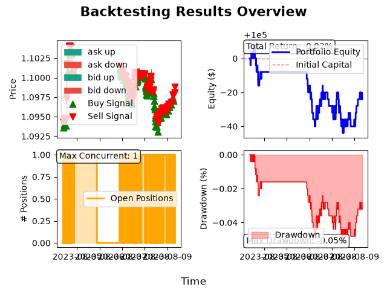

Note
Go to the end to download the full example code.
Your First FX Backtest#
This tutorial runs a complete, reproducible FX backtest with TradeTide. It uses the bundled EUR/USD data, so no data-provider account or download is required. The strategy is deliberately small: Bollinger Bands identify potential mean-reversion entries, while fixed take-profit and stop-loss levels make the risk rules explicit.
The result is a compact four-panel report showing price and signals, equity, open positions, and drawdown. It is an example workflow—not investment advice or a claim about live-trading performance.
Imports#
The public API keeps the essential pieces together: market data, an indicator-backed strategy, exit rules, capital management, and a backtester.
from TradeTide import Backtester, Currency, Market, Strategy
from TradeTide import capital_management, exit_strategy
from TradeTide.indicators import BollingerBands
from TradeTide.times import days, minutes
Load bundled market data#
time_span can be a timedelta (as used here) or a compact duration
string such as "3d 6h". TradeTide ships samples for EUR/USD, GBP/USD,
CHF/USD, JPY/USD, and CAD/USD.
market = Market()
market.load_from_database(
currency_0=Currency.EUR,
currency_1=Currency.USD,
time_span=5 * days,
)
Define the signal rule#
Bollinger Bands compare price with a rolling average and its volatility band. Adding the indicator to a strategy lets the backtester derive trade signals from it.
strategy = Strategy()
strategy.add_indicator(BollingerBands(window=30 * minutes, multiplier=2.0))
Set risk and sizing rules#
Keep the example’s assumptions visible. Static exits each position at a
four-pip stop loss or take profit; FixedLot caps both individual size and
simultaneous exposure.
risk_rules = exit_strategy.Static(stop_loss=4, take_profit=4)
position_sizing = capital_management.FixedLot(
capital=100_000,
fixed_lot_size=10_000,
max_capital_at_risk=10_000,
max_concurrent_positions=1,
)
Run and inspect the backtest#
run performs signal evaluation, position handling, and portfolio
simulation. The chart is a useful first sanity check; evaluate strategies on
appropriate out-of-sample data before making any trading decision.
backtester = Backtester(
strategy=strategy,
market=market,
exit_strategy=risk_rules,
capital_management=position_sizing,
)
backtester.run()
backtester.plot()

<Figure size 640x480 with 4 Axes>
Total running time of the script: (0 minutes 1.806 seconds)